Stanford Prison Experiment : การทดลองเรือนจำสแตนฟอร์ด
ถึงแม้ว่าผู้เข้าร่วมทดลองทุกคนมาด้วยความสมัครใจ และทุกคนก็ทราบดีว่านี่เป็นเพียงการทดลองเพื่อสวมบทบาท พวกเขาสามารถที่จะขอถอนตัวออกจากการทดลองได้ทุกเมื่อ แต่บทบาทและสภาพแวดล้อมที่พวกเขาได้รับกลับกลายเป็นส่วนหนึ่งของความจริงไปภายในไม่ช้า หลังจากได้เริ่มการทดลองไปเพียง 36 ชั่วโมง ผู้เข้าร่วมการทดลองคนแรกก็ได้แสดงอาการหวาดผวา และเสียสติขึ้นมา ผู้คุมขังได้เริ่มทำการทรมานนักโทษของพวกเขาทุกวิถีทาง ตั้งแต่สั่งให้เช็คยอดซ้ำแล้วซ้ำเล่า ลงโทษนักโทษทุกครั้งที่มีการเช็คยอดผิด สั่งให้นักโทษอุจจาระและปัสสาวะลงในถังที่จัดไว้ให้เท่านั้น ยึดเตียงนอนออกไปจากห้องขัง บังคับให้เปลือยกาย เมื่อเวลาผ่านไปไม่นานผู้คุมกว่าหนึ่งในสามแสดงแนวโน้มของอาการซาดิสม์และความรุนแรงขึ้นมา และผู้คุมเกือบทุกคนแสดงความไม่พอใจเมื่อการทดลองต้องถูกยุติลงกระทันหันหลังจากผ่านไปได้เพียง 6 วัน ในขณะเดียวกัน นักโทษทุกคนต่างก็ยอมสยบให้กับอำนาจที่กำลังกดขี่พวกเขาอย่างสมบูรณ์ นักโทษทุกคนยอมรับชะตากรรมและการทารุณ รวมถึงปัจเจกบุคคลและสิทธิเสรีภาพอันเป็นสิทธิพื้นฐานของพวกเขาที่ถูกริดรอนออกไปโดยไม่มีการโต้แย้ง นักโทษบางคนถึงกับยอมทำทุกอย่างเพื่อที่จะได้รับการอภัยโทษจากผู้คุมขัง ถึงแม้ว่าเขารับทราบว่าเขาสามารถเลือกที่จะยุติการทดลองได้ทุกเมื่อ แม้กระทั่งตัว Zimbardo เองก็ไม่พ้นเป็นเหยื่อของการทดลองนี้ เขาและผู้สังเกตการณ์การทดลองนี้อีกกว่า 50 คนไม่มีใครเลยที่คัดค้านหรือรู้สึกถึงความผิดปรกติที่เกิดขึ้นกับการทดลองนี้ และการทดลองได้ดำเนินการต่อไปโดยไม่มีการยุติ นานเกินกว่าที่ควรจะเป็น เพราะเหตุใดจึงเกิดเหตุการณ์เหล่านี้ขึ้น? ผู้คุมเหล่านี้เป็นมนุษย์ที่ชั่วช้าเช่นนั้นหรือ? นักโทษเหล่านี้เป็นบุคคลที่ชอบถูกกดขี่เช่นนั้นหรือ? ไม่เลย ผู้ร่วมทดลองทั้งหมดเป็นนักศึกษามหาวิทยาลัยสแตนฟอร์ด ซึ่งเป็นมหาวิทยาลัยชั้นนำชื่อดังของโลก พวกเขาได้ผ่านการทดสอบทางจิตวิทยาเพื่อยืนยันว่าไม่ได้มีปัญหาทางจิต หรือแนวโน้มไปสู่ความรุนแรง พวกเขาเป็นเพียงบุคคลธรรมดาเช่นพวกเราทุกคน และที่สำคัญ ไม่ได้มีความแตกต่างอย่างใดระหว่างผู้คุมและนักโทษ สิ่งเดียวที่แตกต่างกันระหว่างบุคคลทั้งสองกลุ่ม ก็คือ บทบาทที่ได้รับจากการจับฉลากโดยสุ่ม "เครื่องแบบ" และ "ไม้กระบอง" เป็นตัวแทนของอำนาจที่ได้ถูกมอบเอาไว้ผ่านทางบทบาทที่ถูกสมมติขึ้น บทบาทเหล่านี้ได้เปลี่ยนคนธรรมดาสองคน ให้กลายเป็นบุคคลที่แตกต่างกันโดยสิ้นเชิง
 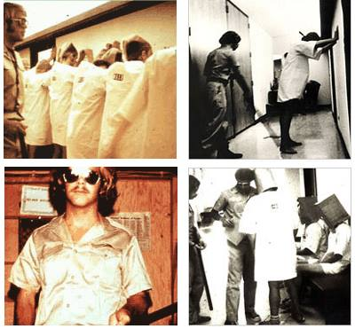
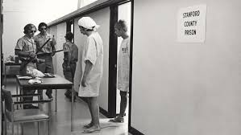
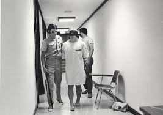
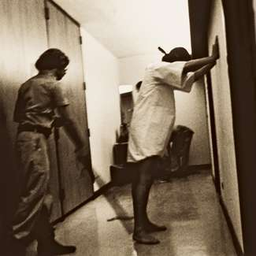
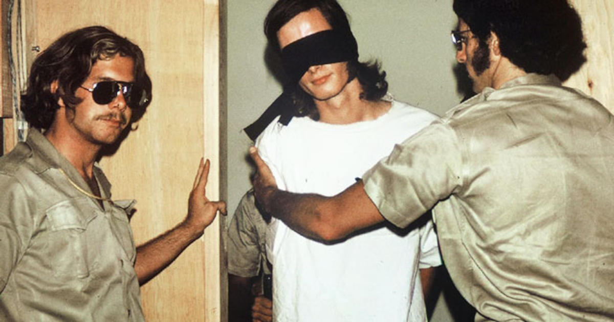
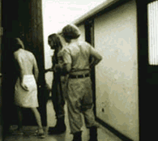
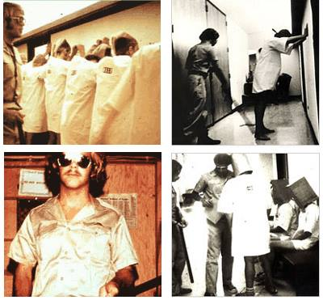
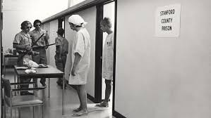
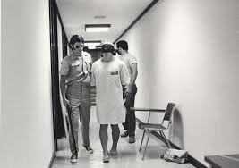
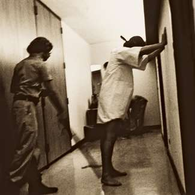
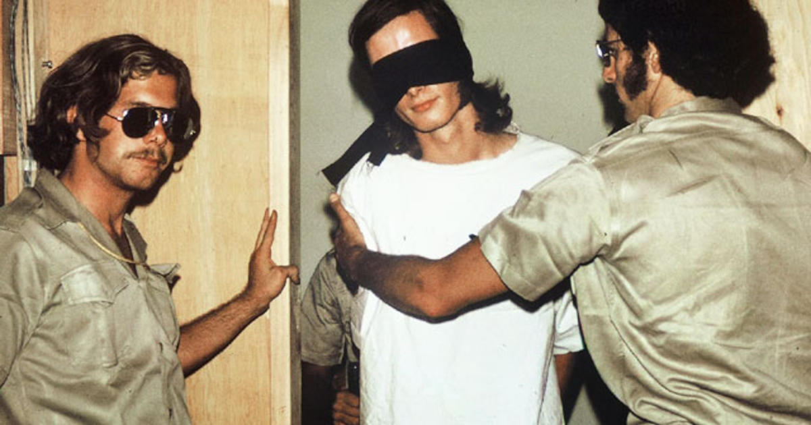
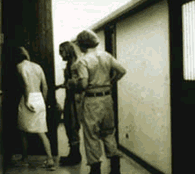
 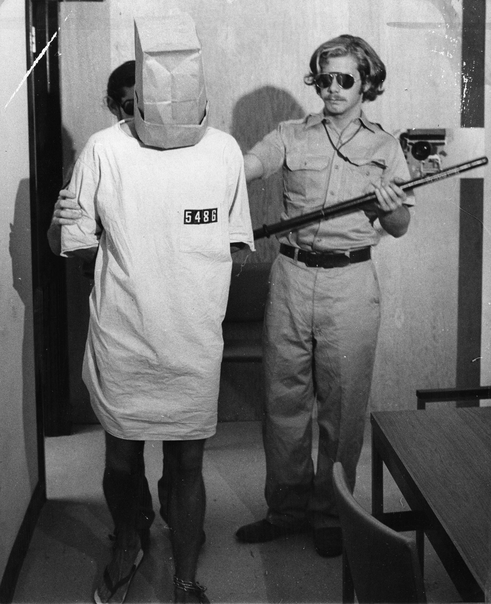
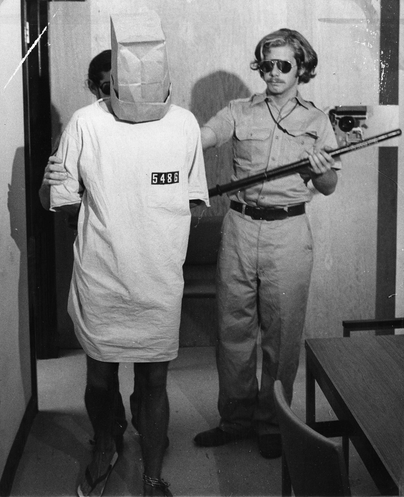